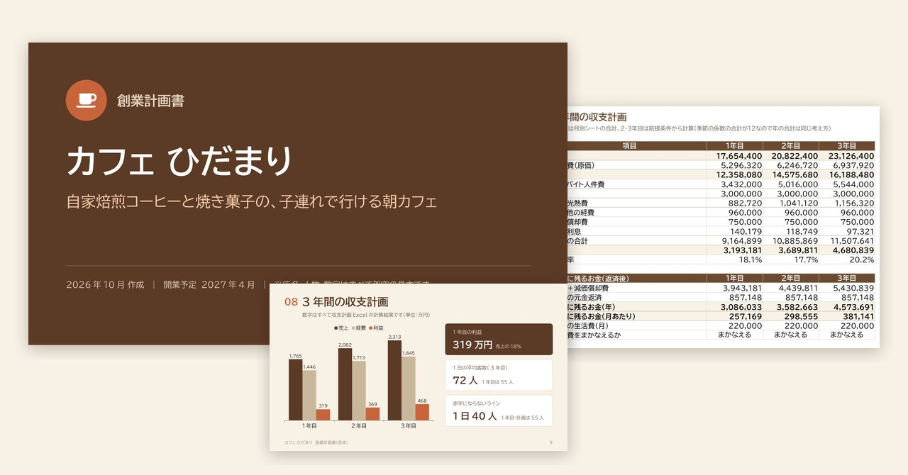
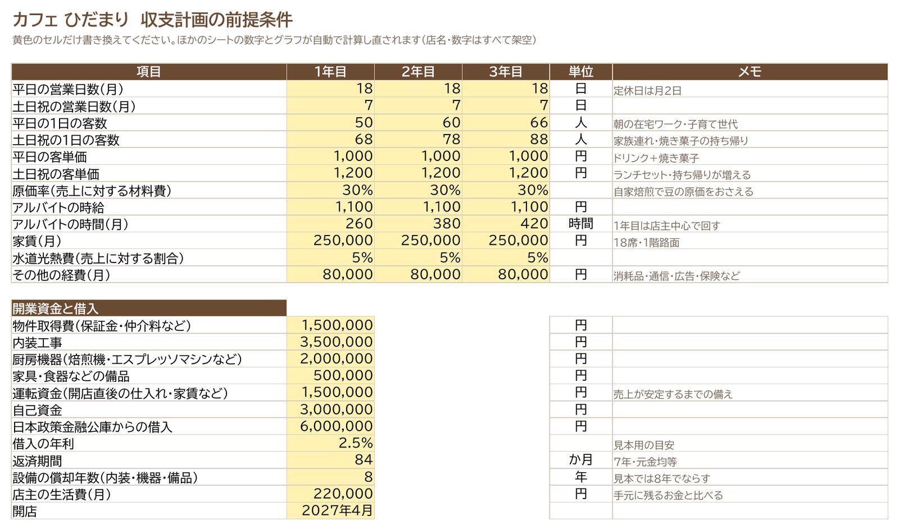
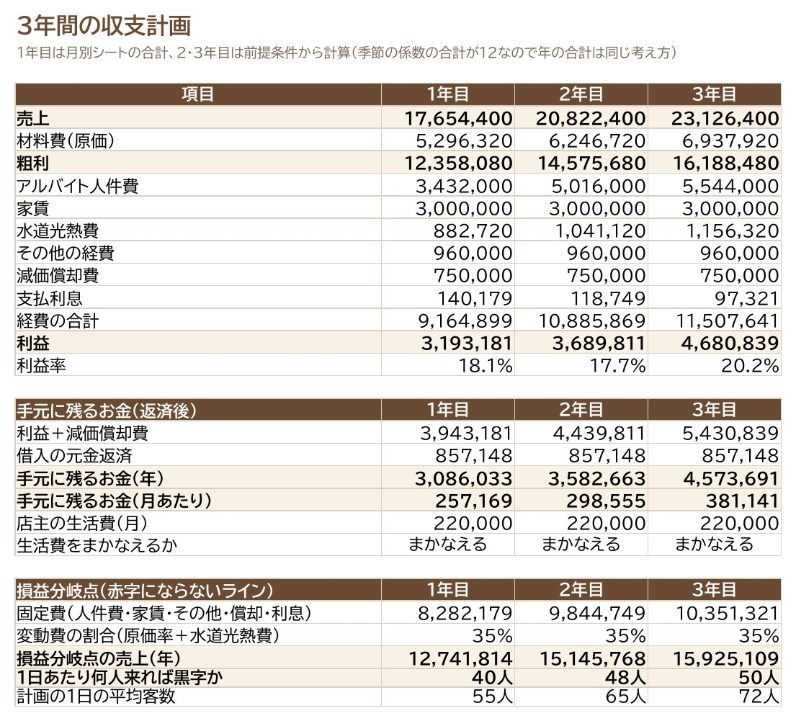
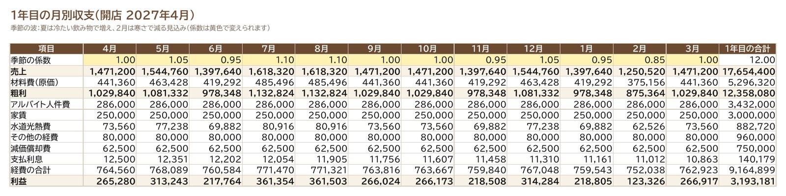
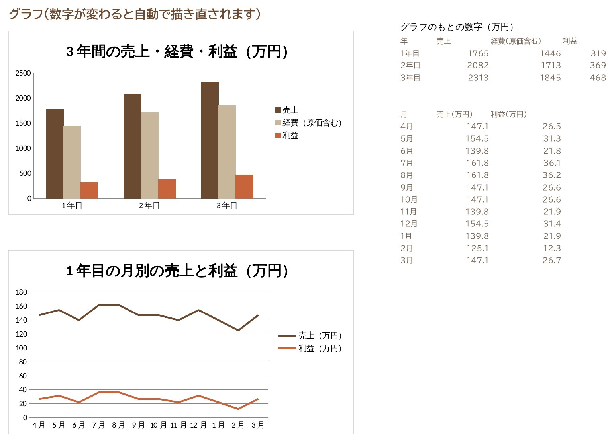

← 制作実績一覧へ戻る
見本 スライド10枚＋Excel
カフェ開業の事業計画書（スライド＋収支計画Excel）
融資の相談に持っていく事業計画書を、読みやすいスライドと、数字の根拠になる収支計画Excelのセットで作りました。Excelの前提を変えると、3年分の売上・利益・返済がすべて計算し直されます。

想定した依頼
「来年、地元でカフェを開きたい。日本政策金融公庫に融資を相談するので、事業計画書を見やすく作ってほしい。数字も3年分ちゃんと出したい」。個人でお店を始める方からのご相談を想定して作りました。
作ったもの
架空のお店「カフェ ひだまり」（駅から徒歩3分・18席の自家焙煎カフェ）の事業計画書です。公庫の創業計画書で聞かれる項目（動機・経験・商品・お客さま・強み・資金・収支）に沿って、10枚にまとめました。
スライドを1枚ずつ見る
収支計画Excel
黄色のセルが入力欄です。客数・客単価・家賃・人件費などを変えると、ほかのシートの数字とグラフがすべて自動で計算し直されます。手で打った計算結果はありません。
- 前提条件（黄色のセルだけ書き換える）
- 3年間の収支（利益・返済後に手元に残るお金・赤字にならない客数）
- 1年目の月別（夏は増え、2月は減る季節の波も反映）
- 開業資金と調達／返済表（84回分）／グラフ




工夫した点
- スライドとExcelの数字を一致させる：スライドの売上・利益・返済額は、すべてExcelの計算結果から取っています。相談の場で「この数字の根拠は？」と聞かれても、Excelを開いて説明できます。
- 「大丈夫か」に先に答える：返済後に手元に残るお金と生活費、赤字にならない1日の客数（40人）、客数が2割少なくても黒字かどうかを、最後の2枚で示しました。
- 文字より図で：経歴は年表、場所は簡単な地図、近くのお店とのちがいは◎○△×の表、資金はドーナツグラフにして、ひと目で伝わるようにしました。
規模と制作時間
- スライド10枚（PowerPoint・PDF）、Excelはシート6枚（前提条件・3年間の収支・1年目の月別・開業資金と調達・返済表・グラフ）
- 制作：設計（スライドの流れと数字の前提）から、Excel・スライド・見た目の確認まで 約20分（AIと一緒に作成。Excelは表計算ソフトで再計算して数字が合うことを確認）
こんなご依頼にも対応できます
- 融資や補助金の相談に使う、事業計画書を見やすく整えたい
- 売上や経費の見込みを、前提を変えて試せるExcelにしたい
- 手書きやWordの計画書を、スライドにまとめ直したい
注意
店名・人物・地名・数字はすべて架空の見本です。数字の前提は見本用の目安で、融資の審査を保証するものではありません。事業の数字そのもの（売上の見込みなど）は、ご依頼主の情報をもとに一緒に決めます。